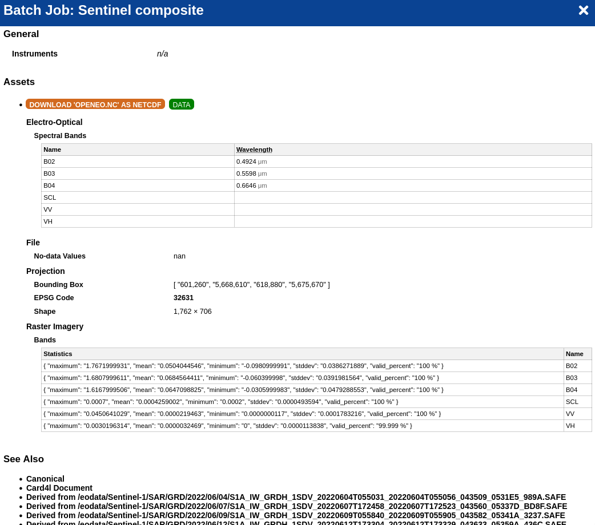

import openeoCreating multi-mission, multi-temporal datacube
This notebook shows how to combine timeseries data from two popular missions, Sentinel-1 and Sentinel-2, in a single datacube for further processing. It can be considered a basic template for many use cases.
It uses precomputed backscatter if available and falls back to compute backscatter on the fly, which works globally but consumes more credits.
We also create 10-daily composites and apply linear interpolation to avoid gaps. Specific methods may require different cloud masking and preprocessing options.
c = openeo.connect("openeofed.dataspace.copernicus.eu")
c.authenticate_oidc()
scl = c.load_collection(
"SENTINEL2_L2A",
temporal_extent=["2022-06-04", "2022-08-04"],
bands=["SCL"],
max_cloud_cover=95,
)
cloud_mask = scl.process(
"to_scl_dilation_mask",
data=scl,
kernel1_size=17, kernel2_size=77,
mask1_values=[2, 4, 5, 6, 7],
mask2_values=[3, 8, 9, 10, 11],
erosion_kernel_size=3)
sentinel2 = c.load_collection(
"SENTINEL2_L2A",
temporal_extent=["2022-06-04", "2022-08-04"],
bands=["B02", "B03", "B04"],
max_cloud_cover=95,
)
sentinel2 = sentinel2.mask(cloud_mask)
sentinel2 = sentinel2.aggregate_temporal_period(
"dekad", reducer="median"
).apply_dimension(dimension="t", process="array_interpolate_linear")Authenticated using refresh token.Some openEO backends offer precomputed Sentinel-1 backscatter. We inspect the backend metadata to check if such a collection is available otherwise we start from raw GRD and compute it on the fly.
S1_collection = "SENTINEL1_GRD"
if "SENTINEL1_GRD_SIGMA0" in c.list_collection_ids():
S1_collection = "SENTINEL1_GRD_SIGMA0"
S1_collection'SENTINEL1_GRD_SIGMA0'sentinel1 = c.load_collection(
S1_collection, temporal_extent=["2022-06-04", "2022-08-04"], bands=["VV", "VH"]
)
if S1_collection == "SENTINEL1_GRD":
sentinel1 = sentinel1.sar_backscatter(
coefficient="sigma0-ellipsoid",
local_incidence_angle=False,
elevation_model="COPERNICUS_30",
)
sentinel1 = sentinel1.aggregate_temporal_period(
"dekad", reducer="median"
).apply_dimension(dimension="t", process="array_interpolate_linear")Now we can simply combine both cubes. Resampling is performed implicitly if needed, but explicit resampling can also be specified.
merged = sentinel2.merge_cubes(sentinel1)The next block receives the combined Sentinel-1 and Sentinel-2 input and transforms it using any method. This can be, for instance, a neural network based on PyTorch.
This example uses blocks of 128x128 pixels with an 8-pixel overlap. Sizes for the time and band dimensions are not specified so that they will be fully included.
The UDF in this example also shows how to print statements to the log, which is an easy way to understand better the XArray data passed in. More information on UDFs can be found in the documentation.
my_udf = openeo.UDF(
"""
from openeo.udf import XarrayDataCube
from openeo.udf.debug import inspect
def apply_datacube(cube: XarrayDataCube, context: dict) -> XarrayDataCube:
array = cube.get_array()
inspect(array,level="ERROR",message="inspecting input cube")
array.values = 0.0001 * array.values
return cube
"""
)
fused = merged.apply_neighborhood(
my_udf,
size=[
{"dimension": "x", "value": 112, "unit": "px"},
{"dimension": "y", "value": 112, "unit": "px"},
],
overlap=[
{"dimension": "x", "value": 8, "unit": "px"},
{"dimension": "y", "value": 8, "unit": "px"},
],
)spatial_extent = {
"west": 4.45,
"east": 4.70,
"south": 51.16,
"north": 51.22,
"crs": "epsg:4326",
}
job = fused.filter_bbox(spatial_extent).execute_batch(
"result.nc", title="Sentinel composite", filename_prefix="merged_cube"
)0:00:00 Job 'vito-j-24080502c7b5492191eeec5b7c2090dd': send 'start'
0:00:46 Job 'vito-j-24080502c7b5492191eeec5b7c2090dd': queued (progress 0%)
0:00:51 Job 'vito-j-24080502c7b5492191eeec5b7c2090dd': queued (progress 0%)
0:00:59 Job 'vito-j-24080502c7b5492191eeec5b7c2090dd': queued (progress 0%)
0:01:09 Job 'vito-j-24080502c7b5492191eeec5b7c2090dd': queued (progress 0%)
0:01:20 Job 'vito-j-24080502c7b5492191eeec5b7c2090dd': running (progress N/A)
0:01:35 Job 'vito-j-24080502c7b5492191eeec5b7c2090dd': running (progress N/A)
0:01:50 Job 'vito-j-24080502c7b5492191eeec5b7c2090dd': running (progress N/A)
0:02:10 Job 'vito-j-24080502c7b5492191eeec5b7c2090dd': running (progress N/A)
0:02:38 Job 'vito-j-24080502c7b5492191eeec5b7c2090dd': running (progress N/A)
0:03:09 Job 'vito-j-24080502c7b5492191eeec5b7c2090dd': running (progress N/A)
0:03:47 Job 'vito-j-24080502c7b5492191eeec5b7c2090dd': running (progress N/A)
0:04:35 Job 'vito-j-24080502c7b5492191eeec5b7c2090dd': running (progress N/A)
0:05:33 Job 'vito-j-24080502c7b5492191eeec5b7c2090dd': running (progress N/A)
0:06:34 Job 'vito-j-24080502c7b5492191eeec5b7c2090dd': running (progress N/A)
0:07:34 Job 'vito-j-24080502c7b5492191eeec5b7c2090dd': running (progress N/A)
0:08:34 Job 'vito-j-24080502c7b5492191eeec5b7c2090dd': running (progress N/A)
0:09:34 Job 'vito-j-24080502c7b5492191eeec5b7c2090dd': running (progress N/A)
0:10:37 Job 'vito-j-24080502c7b5492191eeec5b7c2090dd': finished (progress 100%)When the job is finished, are downloaded as netCDF and can be inspected using XArray or a desktop viewer like QGis.
import xarray as xr
xr.open_dataset("result.nc")<xarray.Dataset>
Dimensions: (t: 7, x: 1762, y: 706)
Coordinates:
* t (t) datetime64[ns] 2022-06-01 2022-06-11 ... 2022-07-21 2022-08-01
* x (x) float64 6.013e+05 6.013e+05 6.013e+05 ... 6.189e+05 6.189e+05
* y (y) float64 5.676e+06 5.676e+06 5.676e+06 ... 5.669e+06 5.669e+06
Data variables:
crs |S1 ...
B02 (t, y, x) float64 ...
B03 (t, y, x) float64 ...
B04 (t, y, x) float64 ...
SCL (t, y, x) float64 ...
VV (t, y, x) float64 ...
VH (t, y, x) float64 ...
Attributes:
Conventions: CF-1.9
institution: openEO platform - Geotrellis backend: 0.38.6a1
description:
title: You can also inspect the result in the openEO editor: 